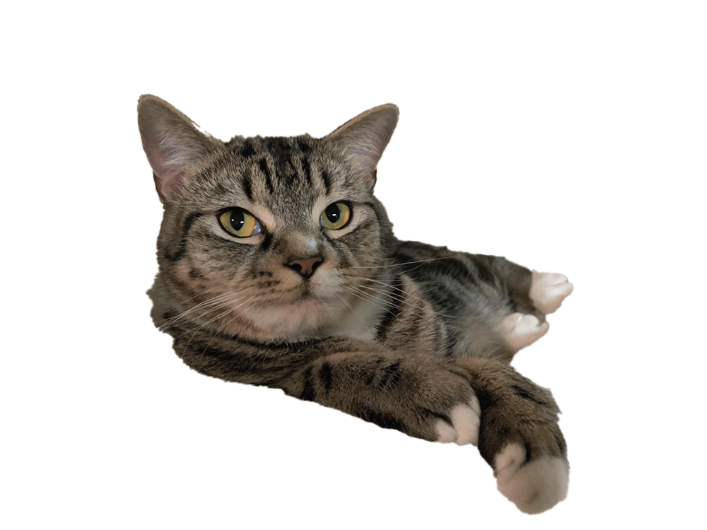
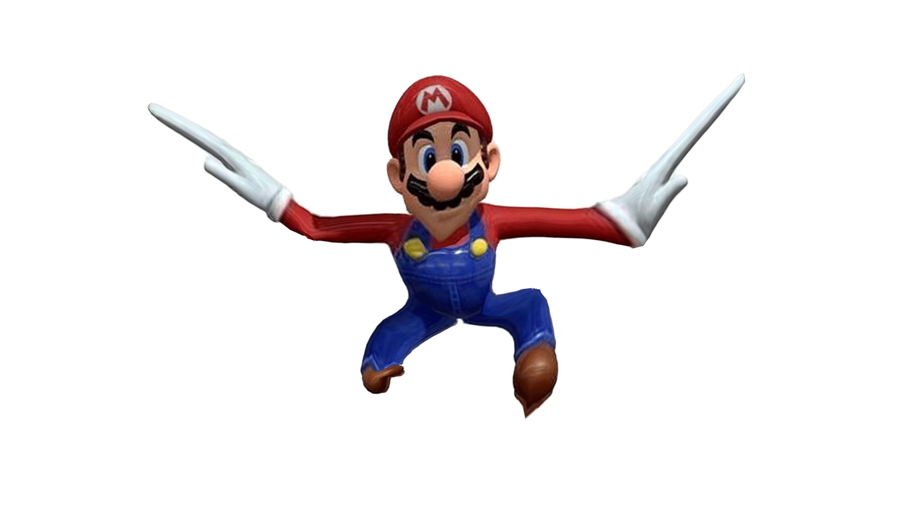
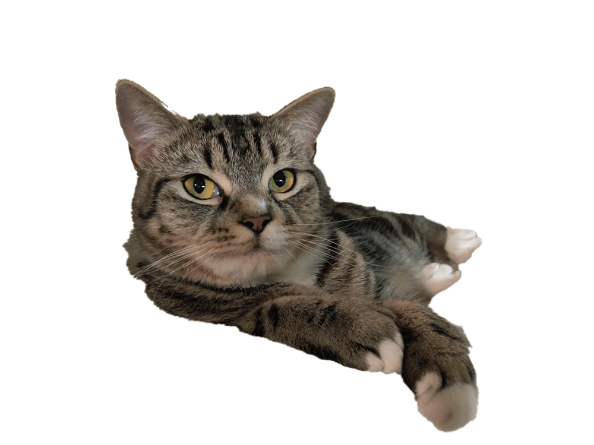
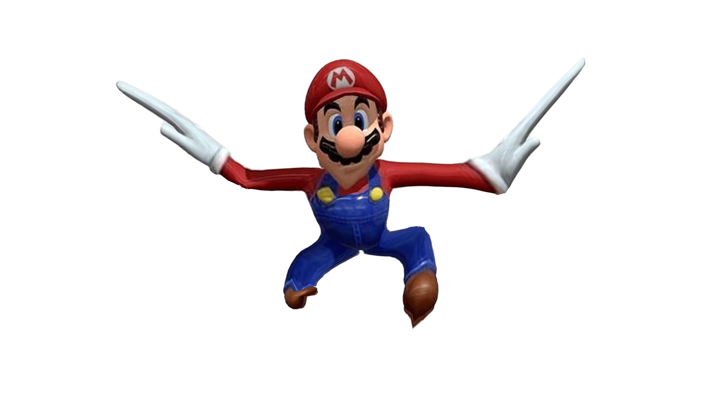

For the Eyes gif i set my background faces to shift every frame, while the eyes change every 4 frames. I did this because i wanted the background to move faster than the eyes take to move the the next position. I set it up so that only one eyes is blinking at one time.
For the puppet-wrap I used a picture of a friends cat. The cat was laying down with it's front paw hanging in the air. I used puppet warp to create a swaying animation for the paw.
For the puppet-wrap I used Mario as my base and stretched out his arms. Using his "elbows" as the anchor i moved the arm about that point to make it look like mario is flapping his wings/arms